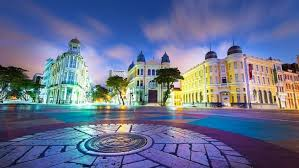

Conheça o Marco Zero, um marco inconfundível do nosso país!
Marco Zero é um ponto turístico bem conhecido na cidade de Recife, onde pessoas se reunem diariamente para participar de todos os tipos de atividade, sendo também uma ótima procura quando se trata de bares e restaurantes para saborear a culinária local.